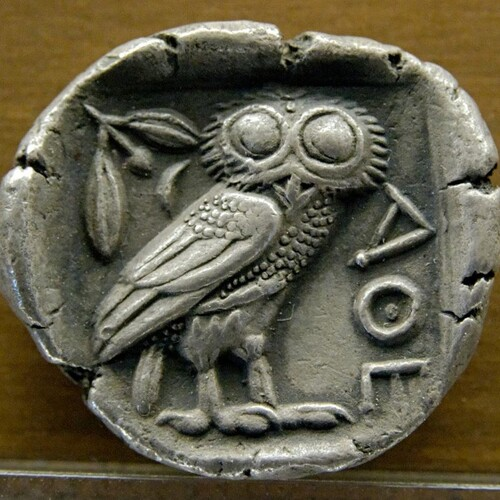

A Warrior is She that thrives and triumphs where’er She be

A Warrior is She that thrives and triumphs where’er She be
from The Warrior Book[1]
A Warrior is She that thrives and triumphs where’er She be.
You cannot be broken, you must use your misfortune to light your way.
You can learn anything you want, there are no smarter.
They are just actors, with a handful of fragile lessons, crafted to impress.
There is nothing that can break you, there are no stronger.
Look to the source of the pain, it comes from Innocence.
Nothing rooted in Innocence is ugly, all lessons that come from being tricked,
add up to make you more beautiful, enable your insight and foresight, and fuel your authenticity.
When the regrets come at night, that's just you brain asking you,
to think harder, to comprehend your beauty in full,
No one can trick you, not for long enough. So, don't be scared.
Memoirs, Audio-books, Lectures will show you how many better people there are.
We all have to Enlarge our Worlds daily.
Audiobooks, and Lectures, will show you that all you have met thus far were just the same type of person.
Do not be afraid to rise.
The people, or person you have long though about, exist.
But before they can see you, you have to rise, and shine, and be seen.
Don't be scared.
Those who will use your Love, Innocence, Endurance and Generosity against you,
have long been lost, they are blinded, and fractured, and damaged, and broken.
They hold no power over you.
If their attacks continue they will grind themselves to dust,
and all the experiences that will be left in their wake, will make you stronger and better.
Battles make you stronger, smarter, more beautiful.
You are a Warrior, that's the oldest name for it.
A Warrior is She that uses the harm that came her way as energy,
who understands none can stay a child and all must grow, and enlarge their worlds.
A Warrior can never be damaged, or hurt -- a Warrior Learns.
A Warrior resists tears in the rain, just like she can resist weakness.
We live in a fragile world, full of fragile people, with fragile egos,
they speak fragile advice, with fragile words; from their fragile hills.
A Warrior does not wait to be taught.
A Warrior learns fastest on her own.
Learn in the sequence that fits you best,
learn at the pace that helps you most.
Push the dark imaginings back,
and rise.
Move your hand.
And push up.
And stand up.
Get ready to walk,
and then run, day, after day, slightly longer.
And then lift your weights, the way you learned to run,
and then lift for longer, and never rest.
And then, with your sweetest audio-book.
Step.
Step Up.
Rise Up.
To No End.
This is The Life Of A Warrior.
Nothing Can Crush You,
Nothing Can Hold You.
Don't You See?
Everything Makes You Stronger,
Everything Makes You Fight Longer.
You,
Are A Warrior.
A Warrior is She that thrives and triumphs where’er She be References
[1]: https://westland-valhalla.github.io/warrior/